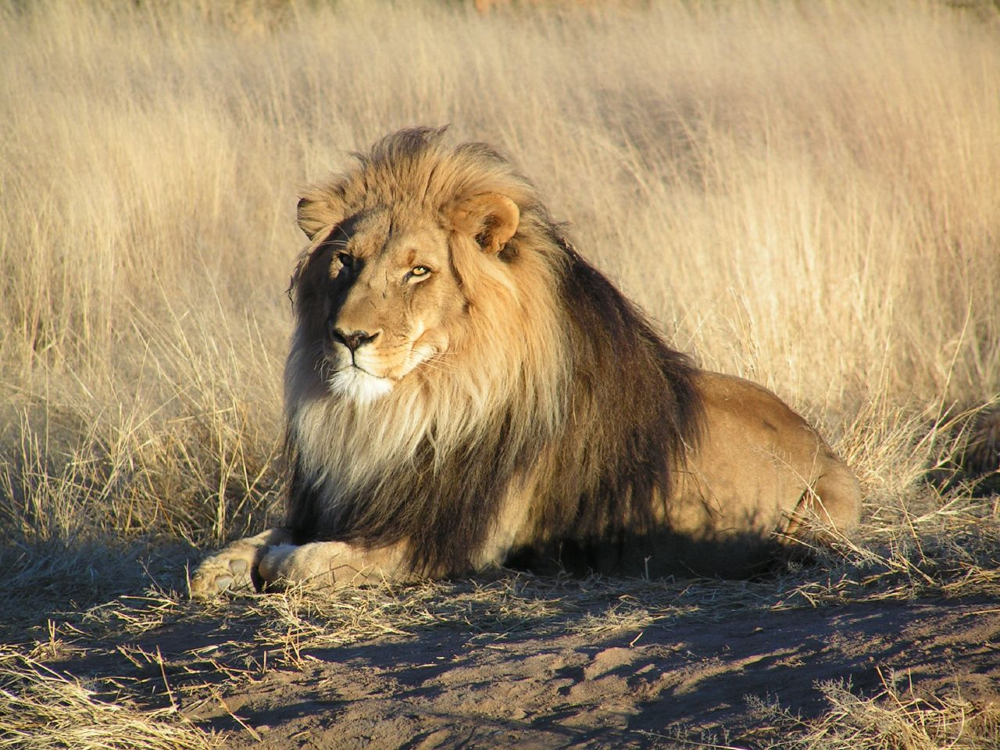

LIONS
Index
- About Lions
- Images
- Distribution and habitat
- Behaviour and ecology
- References
About Lions
The lion (Panthera leo) is a large cat of the genus Panthera native to Africa and India. It has a muscular, deep-chested body, short, rounded head, round ears, and a hairy tuft at the end of its tail. It is sexually dimorphic; adult male lions are larger than females and have a prominent mane.
It is a social species, forming groups called prides. A lion's pride consists of a few adult males, related females, and cubs. Groups of female lions usually hunt together, preying mostly on large ungulates. The lion is an apex and keystone predator; although some lions scavenge when opportunities occur and have been known to hunt humans, the species typically does not.
Because of their size, strength, and predatory skills, lions are considered one of the “big cats”. Tigers, cheetahs, leopards, jaguars, and cougars are also part of this grouping.
Images

/https://tf-cmsv2-smithsonianmag-media.s3.amazonaws.com/filer/two-male-lions-Kenya-631.jpg)


Click the below picture to read:
The Truth about Lions

Distribution and habitat
African lions live in scattered populations across sub-Saharan Africa. The lion prefers grassy plains and savannahs, scrub bordering rivers and open woodlands with bushes. It rarely enters closed forests. On Mount Elgon, the lion has been recorded up to an elevation of 3,600 m (11,800 ft) and close to the snow line on Mount Kenya. Savannahs with an annual rainfall of 300 to 1,500 mm (12 to 59 in) make up the majority of lion habitat in Africa, estimated at 3,390,821 km2 (1,309,203 sq mi) at most; but remnant populations are also present in tropical moist forests in West Africa and montane forests in East Africa.

 The Asiatic lion now survives only in and around Gir National Park in Gujarat, western India. Its habitat is a mixture of dry savannah forest and very dry, deciduous scrub forest. In Africa, the range of the lion originally spanned most of the central African rainforest zone and the Sahara desert.[77] In the 1960s, it became extinct in North Africa, except in the southern part of Sudan.
The Asiatic lion now survives only in and around Gir National Park in Gujarat, western India. Its habitat is a mixture of dry savannah forest and very dry, deciduous scrub forest. In Africa, the range of the lion originally spanned most of the central African rainforest zone and the Sahara desert.[77] In the 1960s, it became extinct in North Africa, except in the southern part of Sudan.
Behaviour and ecology
Lions spend much of their time resting; they are inactive for about twenty hours per day.[85] Although lions can be active at any time, their activity generally peaks after dusk with a period of socialising, grooming and defecating. Intermittent bursts of activity continue until dawn, when hunting most often takes place. They spend an average of two hours a day walking and fifty minutes eating.
References
- Wikipedia on lions
- NAT GEO Kids
- Dynasties: lions with pride